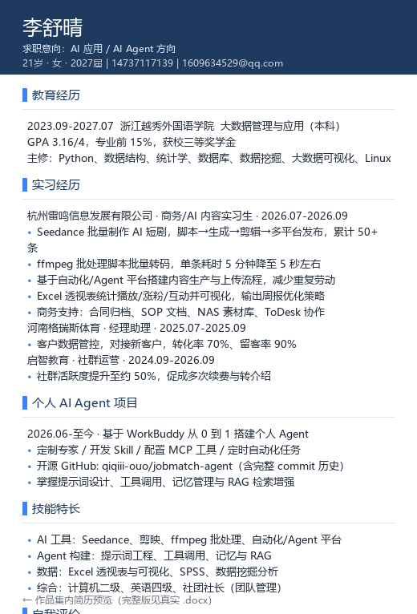

一句话定位：会用 AI 工具、也能从 0 搭 Agent 的应届生，想把"做出来的东西"当作品。
我是李舒晴，大数据管理与应用专业 2027 届应届生。在杭州雷鸣信息发展有限公司的实习里， 我实操了 AI 短剧生产、ffmpeg 批量处理、内容自动化流程、账号数据分析 等 AI 应用工作。
为了系统证明自己的 AI Agent 能力，我从 0 设计并用代码实现了一个求职助手 Agent， 并把专家人设、技能定义、自写脚本全部开源到 GitHub——面试可现场演示、链接可查。
求职方向覆盖三类岗位：AI Agent 应用/技术、数据分析、AI 产品运营/产品经理， 下面按"作品 + 产出 + 简历"三层组织，方便快速了解。
这是简历里写的"个人 Agent 项目"，真实可运行、可演示、源码可查。
输入一份岗位 JD + 你的简历，输出：匹配度评分、简历优化建议、面试题预测。 底层覆盖 Agent 三大件，正好对应我的学习路线 L1→L5。
面试怎么讲：从"为什么做"（求职场景痛点）→"Agent 三件套怎么落地" （提示词/工具/记忆）→"规则基线为何免 API Key"（工程取舍）→"下一步 L3 MCP / L4 自动化 / RAG"。 能讲清设计，比只会调 API 更有料。
2026-07 ~ 2026-09 · 商务 / AI 内容运营实习生。以下为真实工作产出（非开源代码，属岗位成果）。
独立完成"脚本 → Seedance 生成 → 剪辑 → 多平台发布"全链路，累计产出短剧内容。
Seedance · 剪辑 · 多平台分发编写 ffmpeg 批处理脚本实现批量转码/剪辑，将重复操作脚本化，提升处理效率。
ffmpeg · 批处理脚本梳理内容生产与上传中的重复环节，搭建自动化流程，把机械操作交给流程执行。
流程自动化 · 提效用 Excel 透视表统计播放/涨粉/互动数据并输出周报，据此优化发布策略。
数据分析 · 透视表 · 可视化注：以上产出中的具体条数、耗时、提效百分比请以实习真实数据为准，面试前填入简历对应位置。
下面是一份真实运行样例：输入通用「应届 AI 产品岗」JD + 我的简历，Agent 自动产出匹配度评分、待补强项与改写建议、面试题预测。用自己简历做 dogfooding，既演示能力也验证可用性。
Agent 总结的优势：真实 AIGC 实习 + 个人 Agent 开源项目 + 数据驱动 + 用户/增长体感，是应届里很少见的组合。
Agent 自动识别的「待补强项 + 改写建议」（演示工具核心能力）：
Agent 预测的高频面试题：
完整样例输出（含硬/软要求逐项对照、改写示例、优化优先级清单）见 简历匹配分析全文（Markdown）。
同一段经历，按岗位叙事重写，投递时选对应版本。

简历预览（AI Agent 方向示意）。完整 .docx 三份见本地「桌面\简历\美化版\」完整 .docx 简历文件见本地「桌面\简历\美化版\」三份；如需在线预览版可向我索取。
按岗位相关性组织。